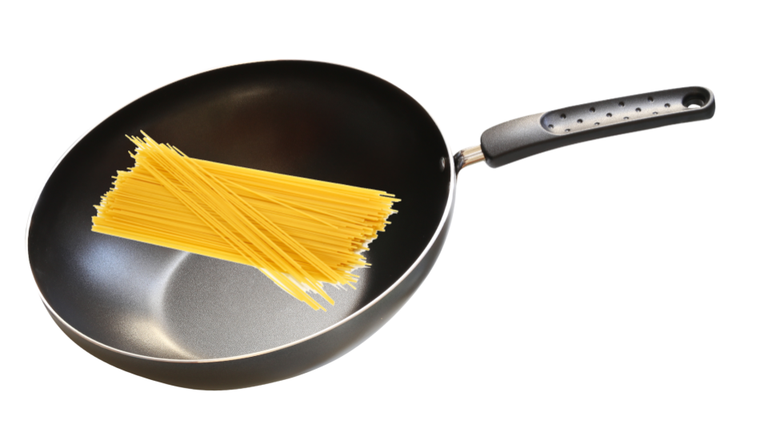
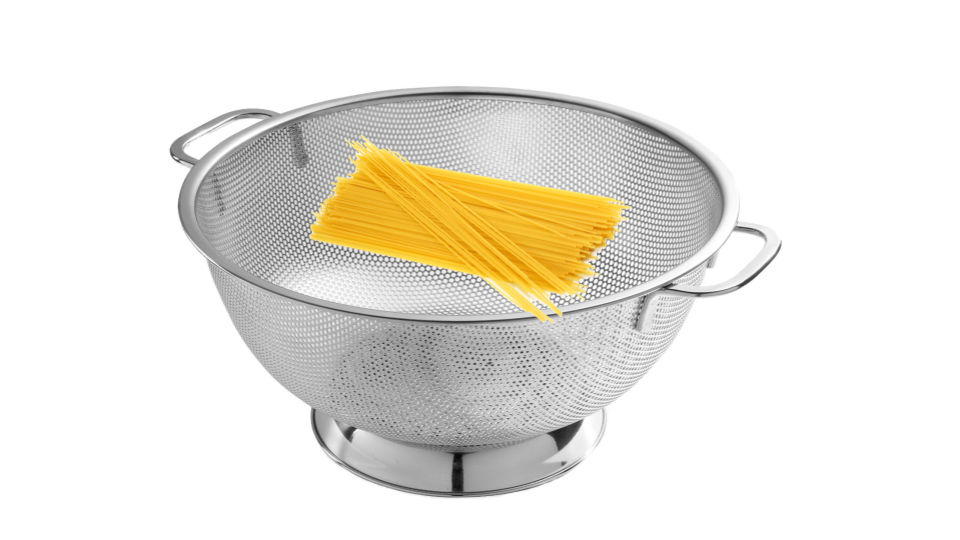

Step 3: Cook Dry Pasta
Now, for the pasta. Leave the sauce in its pot.
GET another large sized pot.
Fill the pot with 4 quarts of water for 4 ounces of dry pasta.
Add 2-4 tablespoons of salt and bring the water to a rolling boil over high heat. Once the water is boiling,
ADD the pasta and stir.
Cook in around 8 to 12 minutes based on your preference.
If it is done to your liking,
REMOVE the pasta from the boiling water and strain the pasta.